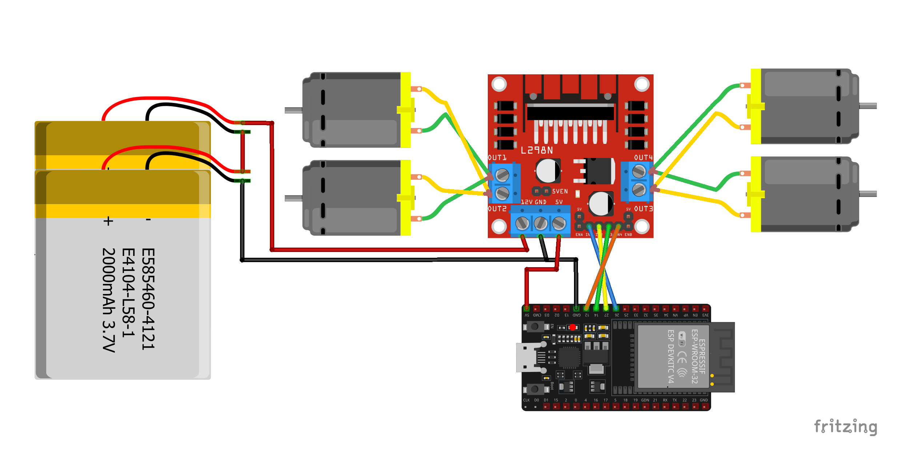

#include "BluetoothSerial.h"
BluetoothSerial SerialBT;
int IN1 = 26;
int IN2 = 27;
int IN3 = 14;
int IN4 = 12;
void forward();
void back();
void left();
void right();
void stopCar();
void setup() {
pinMode(IN1, OUTPUT);
pinMode(IN2, OUTPUT);
pinMode(IN3, OUTPUT);
pinMode(IN4, OUTPUT);
stopCar();
SerialBT.begin("ESP32_CAR");
}
void loop() {
if (SerialBT.available()) {
char c = SerialBT.read();
if (c == 'F') forward();
else if (c == 'B') back();
else if (c == 'L') left();
else if (c == 'R') right();
else if (c == 'S') stopCar();
}
}
void forward(){
digitalWrite(IN1,1);
digitalWrite(IN2,0);
digitalWrite(IN3,1);
digitalWrite(IN4,0);
}
void back(){
digitalWrite(IN1,0);
digitalWrite(IN2,1);
digitalWrite(IN3,0);
digitalWrite(IN4,1);
}
void left(){
digitalWrite(IN1,0);
digitalWrite(IN2,1);
digitalWrite(IN3,1);
digitalWrite(IN4,0);
}
void right(){
digitalWrite(IN1,1);
digitalWrite(IN2,0);
digitalWrite(IN3,0);
digitalWrite(IN4,1);
}
void stopCar(){
digitalWrite(IN1,0);
digitalWrite(IN2,0);
digitalWrite(IN3,0);
digitalWrite(IN4,0);
}